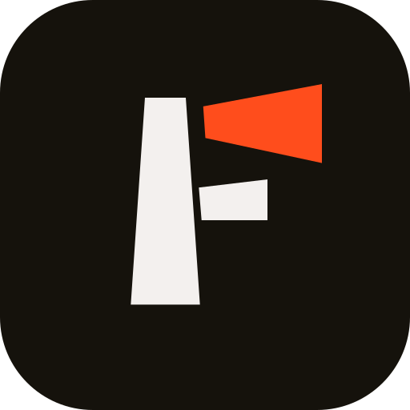

01 — FUNDACIÓN
Por qué existimos.
Todo lo visual sale de aquí. Si una decisión de diseño no ayuda a cumplir este propósito, no va.
Iluminar el camino de iglesias, escuelas y negocios para que su mensaje se vea desde lejos, en los dos idiomas de su comunidad.
Misión
Páginas claras que la gente sí usa.
Sitios bilingües, rápidos y fáciles de mantener para organizaciones del suroeste de Florida.
Promesa
Respuesta en 1 o 2 días.
Un trato cercano, por WhatsApp, con una persona real que conoce tu comunidad.
Posicionamiento
Calidad de gran empresa, trato de pastor.
Para ministerios y negocios locales que necesitan verse profesionales sin perder su voz.
Valores
01
Claridad
Una idea por pantalla. Si hay que explicarlo dos veces, se rediseña.
02
Cercanía
Hablamos de tú, con nombres y lugares reales. Nada de jerga.
03
Constancia
Como un faro: siempre encendido. Acompañamos después de publicar.
Personalidad
02 — LOGO
La F que alumbra.
El símbolo es una letra F construida como un faro: el trazo vertical es la torre y el brazo superior es el haz de luz. Simple para un favicon, fuerte para un letrero.
- 1La torreTrazo vertical que se ensancha hacia abajo: estabilidad, base firme.
- 2El hazBrazo superior en Señal, separado de la torre: la luz que sale y llega lejos. Es la única parte de color.
- 3El brazo medioCompleta la F. Más corto que el haz para que la luz domine.
- 4El wordmark“faro” en Sofia Sans 800 y “digital” en 400 al 55%, en minúsculas, con espaciado −4.5%.
Versiones

Ícono de appEspacio libre y tamaño mínimo
Usos incorrectos
No cambies el color del haz
03 — COLOR
Crema, Noche y una Señal.
Dos mundos: el día (Crema, cálido y calmado) y la noche (oscuro, dramático). Señal es el haz del faro y aparece en los dos, siempre poco.
Primarios
--cremaCrema
HEX#F3F0EE
RGB243 240 238
UsoFondo principal
--tintaTinta
HEX#141413
RGB20 20 19
UsoTexto y botones
--senalSeñal
HEX#FF4D1C
RGB255 77 28
UsoAcción principal, haz
Secundarios y neutros
--nocheNoche
HEX#15120C
--noche-2Noche 2
HEX#211C13
--pizarraPizarra
HEX#B7C0CE
--senal-txtSeñal texto
HEX#C8370A
--crema-2Crema 2
HEX#FCFBFA
--grisGris
HEX#6B6862
--lineaLínea
HEX#DDD7D1
--blancoBlanco
HEX#FFFFFF
Proporción
CREMA 50%
NOCHE 25%
TINTA 13%
PIZARRA
Contraste (WCAG 2.2)
| Combinación | Ejemplo | Contraste | Texto normal |
|---|---|---|---|
| Tinta sobre Crema | Cotizar | 16.2 : 1 | AAA |
| Crema sobre Noche | Cotizar | 16.5 : 1 | AAA |
| Tinta sobre Pizarra | Cotizar | 10.0 : 1 | AAA |
| Señal sobre Noche | Cotizar | 5.6 : 1 | AA |
| Tinta sobre Señal | Cotizar | 5.6 : 1 | AA |
| Señal texto sobre Crema | Cotizar | 4.6 : 1 | AA |
| Blanco sobre Señal | Cotizar | 3.3 : 1 | No usar |
04 — TIPOGRAFÍA
Una voz con dos tonos.
Newsreader, una serif editorial, para los momentos grandes: titulares de portada y cierres. Sofia Sans, una sans humanista en peso medio, para todo lo demás. Las dos son gratis en Google Fonts.
Display · Newsreader 400
Aa
ABCDEFGHIJKLMNÑOPQRSTUVWXYZ
abcdefghijklmnñopqrstuvwxyz 0123456789
abcdefghijklmnñopqrstuvwxyz 0123456789
Texto e interfaz · Sofia Sans 400–800
Aa
ABCDEFGHIJKLMNÑOPQRSTUVWXYZ
abcdefghijklmnñopqrstuvwxyz 0123456789
abcdefghijklmnñopqrstuvwxyz 0123456789
Escala
| Display XL | Desde lejos. | Newsreader 400 · 112/112 · −3% |
| Display L | Hablemos. | Newsreader 400 · 64/68 · −2% |
| Heading XL | Tres formas | Sofia Sans 500 · 88/88 · −2.5% |
| Heading 1 | Para quién trabajamos | Sofia Sans 500 · 48/50 · −2% |
| Heading 2 | Iglesias y ministerios | Sofia Sans 500 · 32/37 · −1.5% |
| Body L | Páginas web bilingües, claras y fáciles de mantener. | Sofia Sans 400 · 20/30 |
| Body | Te respondemos en 1 o 2 días con una cotización sin compromiso. | Sofia Sans 400 · 17/26 |
| Eyebrow | Servicios | Sofia Sans 700 · 13 · +6% · mayúsculas |
05 — REJILLA Y ESPACIO
Aire de sobra.
Rejilla de 12 columnas, márgenes generosos y una escala de espacio de base 4. Las secciones respiran: entre 96 y 160 px arriba y abajo.
12 columnas · ancho máximo 1340 px · medianiles 24 px · margen lateral 20–56 px
Escala de espacio
4
8
12
16
24
32
48
64
96
128
Radios
pill · 999
xl · 48
lg · 28
md · 14
06 — ELEMENTOS GRÁFICOS
Formas que vienen de la luz.
Cinco recursos, todos derivados del faro. Úsalos para enmarcar fotos y dar ritmo, nunca como decoración vacía.
Cápsula · marco de fotos
Círculo + órbita
Puntos de señal
Lluvia de luz · llamados finales
Aa
Bloque Señal a todo lo anchoPantalla · muestra el trabajo real
07 — COMPONENTES
Pocas piezas, siempre iguales.
Todos los botones miden 48 px de alto, lo mínimo para tocar cómodo con el dedo.
Barra de anuncio
Cotización gratis en 1–2 días: escríbenos por WhatsApp. Empezar
Eyebrow y campo
Servicios
Menú flotante (píldora) farodigitalCotizar
farodigitalCotizar
08 — ICONOGRAFÍA
Línea fina, sobre la noche.
Trazo de 1.5 px, puntas redondas, en una cuadrícula de 24. En Crema sobre Noche o en Tinta sobre Crema. Nunca en cuadritos de colores.
Iglesia
Escuela
Negocio
Bilingüe
WhatsApp
Publicar
09 — MOVIMIENTO
Como un haz que barre.
El movimiento es lento, continuo y con propósito, como la luz de un faro. Nada rebota ni parpadea. Si el usuario pide menos movimiento, todo se detiene.
--dur-rapido | 150 ms · botones y estados |
--dur-medio | 300 ms · menús, tarjetas |
--dur-lento | 600 ms · entradas de sección, carrusel |
--ease-faro | cubic-bezier(.2, .8, .2, 1) · sale rápido, llega suave |
10 — VOZ Y TONO
Cercana, clara, de tú.
Habla como un pastor que conoce a su comunidad. Primero lo que la persona gana; después cómo se hace. El mismo tono en español y en inglés.
Así sí
“Que tu iglesia se vea desde lejos. Te respondemos en 1 o 2 días.”
Así no
“Potenciamos tu presencia digital con soluciones innovadoras de última generación.”
Usa
Tú · tu comunidad · claro · fácil · en los dos idiomas · Fort Myers · WhatsApp
Evita
Soluciones · sinergia · siguiente nivel · disruptivo · experiencias digitales
English
Same warmth: “So your church can be seen from afar. We reply within 1–2 days.”
11 — APLICACIONES
La marca, en la vida real.
Ejemplos de cómo se ve el sistema fuera del sitio web.
Se ve desde lejos.
Julio C. Chinea
Fundador · Founder
(786) 805-7734 · WhatsApp
chinea@farodigitalfl.com
farodigitalfl.com · Fort Myers, FL
chinea@farodigitalfl.com
farodigitalfl.com · Fort Myers, FL
 Faro DigitalBusiness account
Faro DigitalBusiness accountFaro Digital farodigital
farodigital
Julio C. Chinea
Fundador, Faro Digital
(786) 805-7734 · farodigitalfl.comPáginas web bilingües · Fort Myers, FL
Fundador, Faro Digital
(786) 805-7734 · farodigitalfl.com
12 — DESCARGAS Y TOKENS
Todo en un lugar.
Archivos listos para usar, y los tokens de diseño que usa el sitio web.
 Perfil WhatsApp · oscuroPNG · 1024 px
Perfil WhatsApp · oscuroPNG · 1024 px
 Perfil · claroPNG · 1024 px
CSSDesign tokensfaro.css
Perfil · claroPNG · 1024 px
CSSDesign tokensfaro.css
/* Faro Digital · design tokens v3 */ :root { --crema: #F3F0EE; --tinta: #141413; --senal: #FF4D1C; --noche: #15120C; --noche-2: #211C13; --pizarra: #B7C0CE; --senal-txt: #C8370A; --gris: #6B6862; --linea: #DDD7D1; --f-serif: "Newsreader", Georgia, serif; --f-sans: "Sofia Sans", system-ui, sans-serif; --r-pill: 999px; --r-xl: 48px; --r-lg: 28px; --ease-faro: cubic-bezier(.2, .8, .2, 1); }